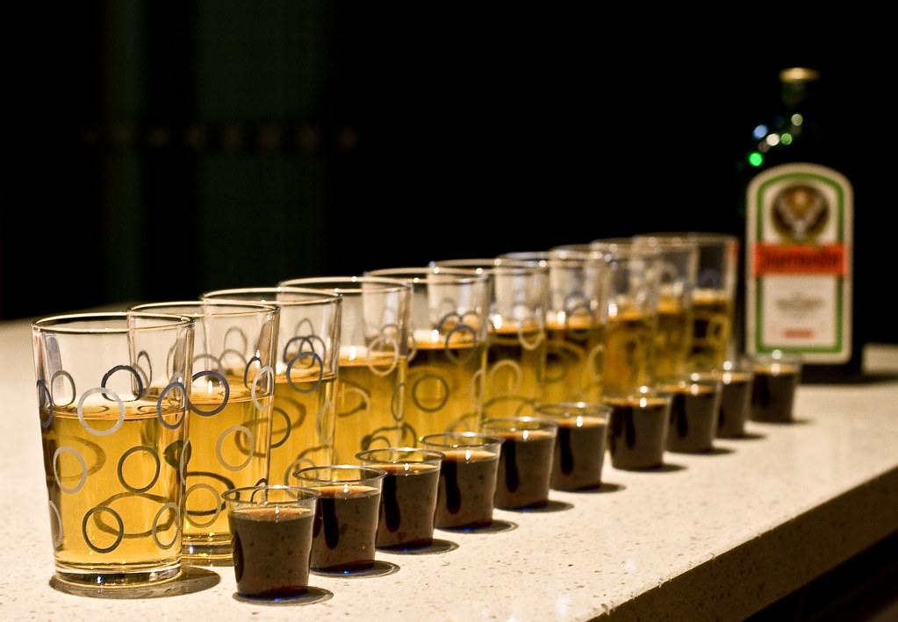
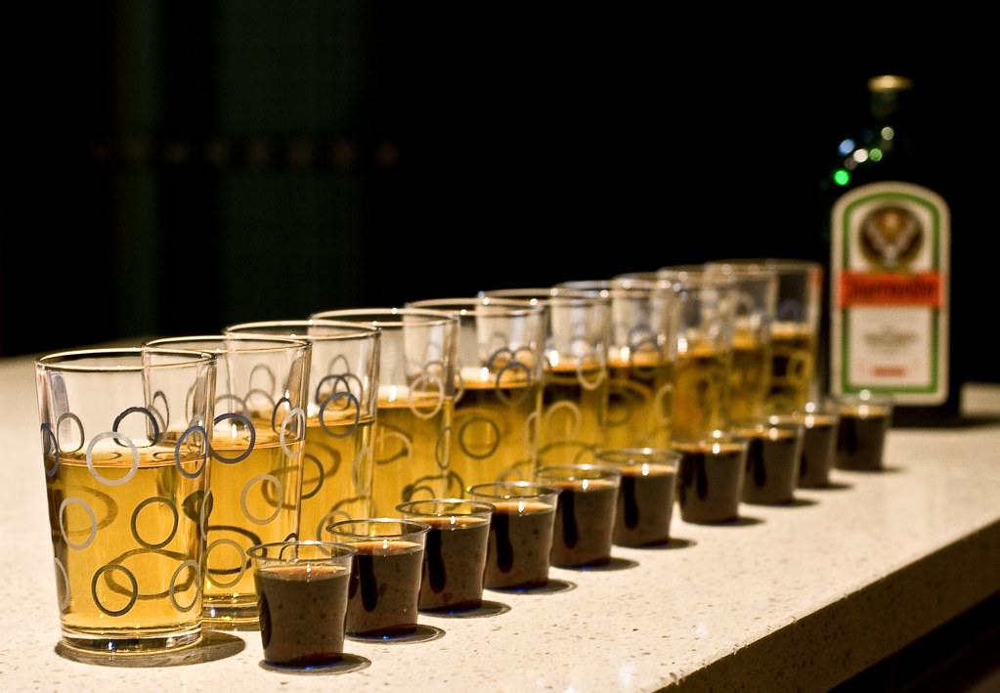
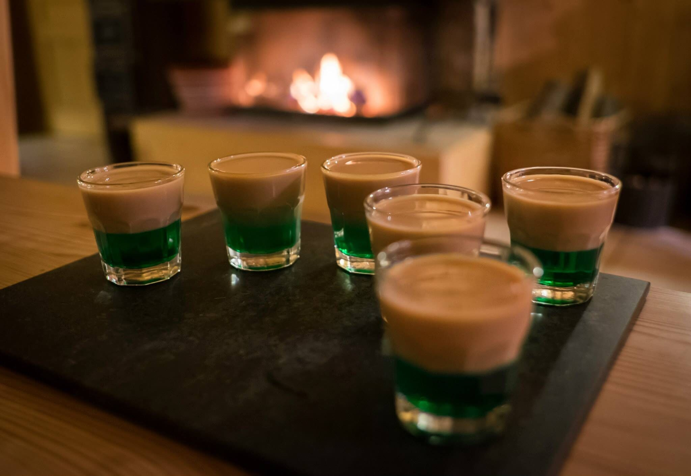
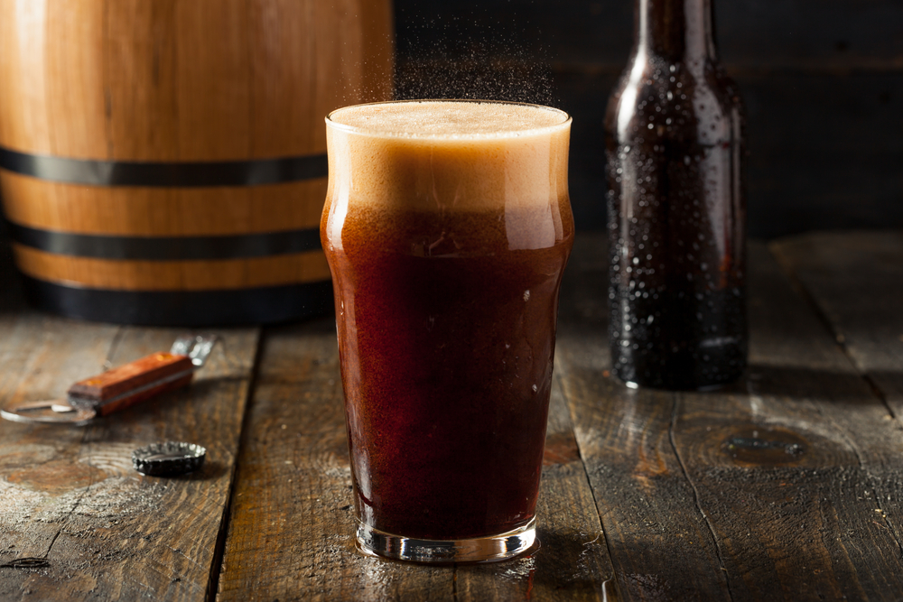
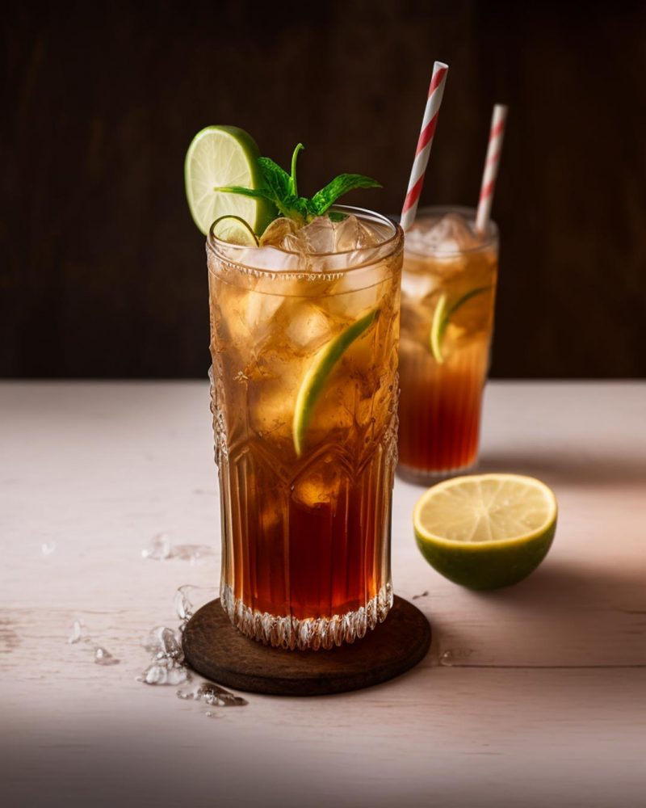

yagger bomb
Le Jägerbomb est un cocktail à base de Jägermeister, une liqueur allemande, et de...
10 commentaires
Le Jägerbomb est un cocktail à base de Jägermeister, une liqueur allemande, et de...
10 commentaires
Le Get 27 est une liqueur menthe verte populaire, originaire de...
4 commentaires
Le "Cuba Libre" est un célèbre cocktail qui a...

2 commentaires
Le Picon Bière est un mélange de bière blonde et de...
7 commentaires
L'histoire du cocktail Long Island Iced Tea remonte aux...
3 commentaires